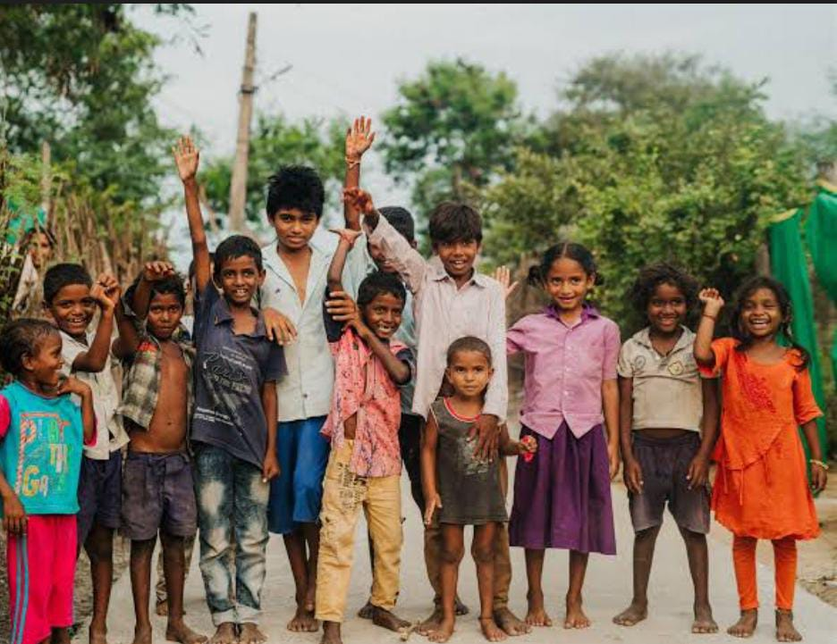
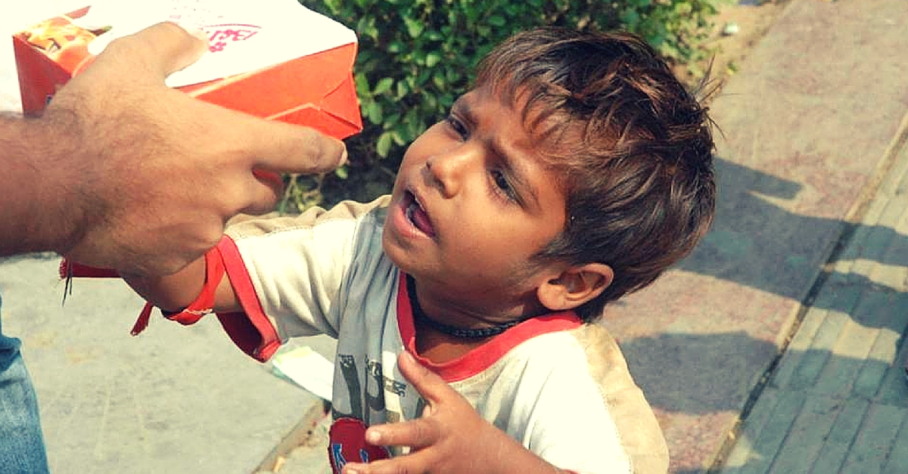

At YUVA FOUNDATION, our heart beats for the forgotten, the broken, and the voiceless. We work with children who have no access to education, women who have lost all hope, youth who are misled and confused, and the elderly who are left alone. Our mission is simple: to love, to care, and to build lives with dignity and hope.